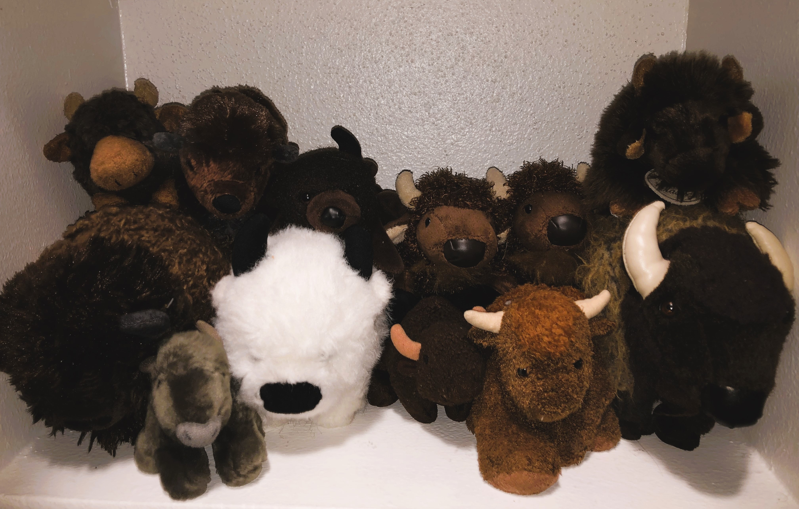
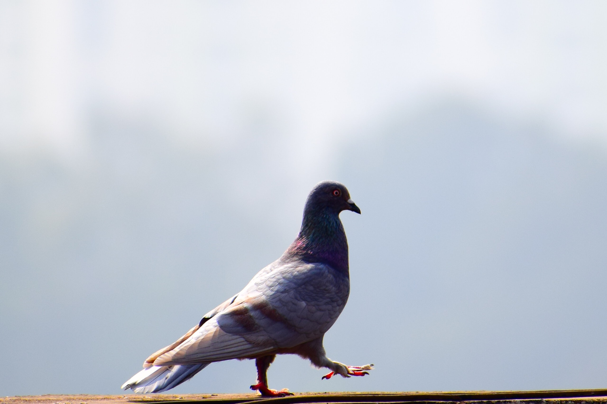
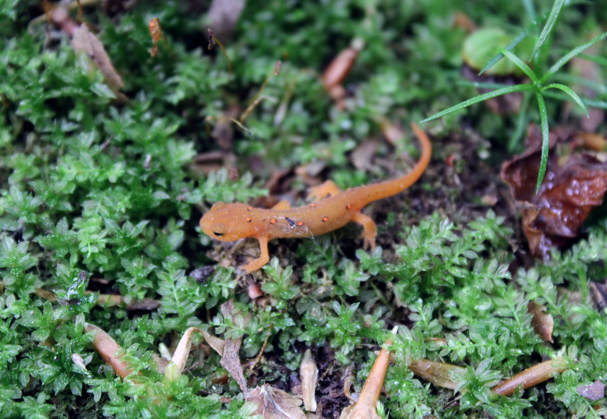

All About Me!

My name is Allison Daniel and I am the middle child of five children. I am half white and a quarter Korean and quarter Mexican. I have lived in Houston, Tx my whole life and I'm looking to move to the North-East within the next year. I've always been a very artistic person and like to dabble in many different forms of art from photography to collaging to jewelry making! I am constantly looking for new art forms to try out and hope one day to be able to incorporate my art into my new coding career! My favorite animal is the American Buffalo and have been collecting dolls and researching about the American Buffalo since a very young age. Some of my goals for myself are to get a career in programing or web design so can one day own a few chickens, pigeons, and a few newts (specifically Eastern Newts).


